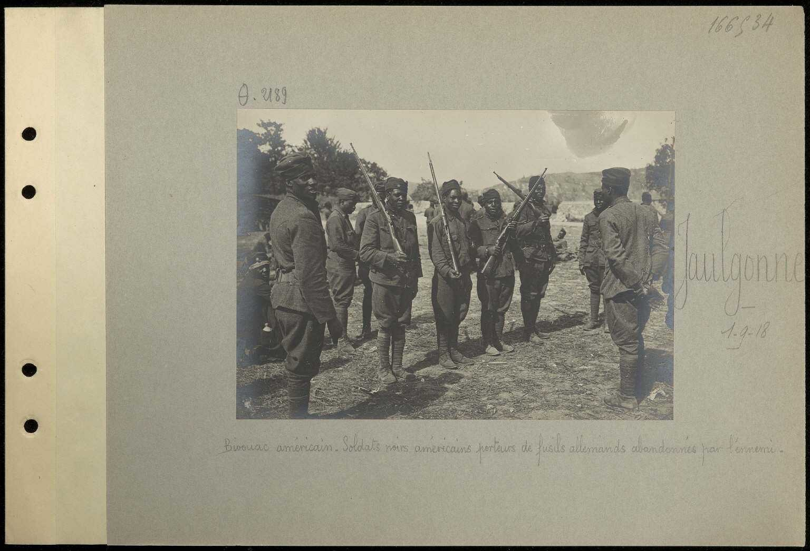

Colonel Ulysses Grant McAlexander
Le Colonel Ulysses Grant McAlexander, commandant du 38e Régiment d'Infanterie US, est l'homme qui a refusé de reculer. Alors que la doctrine de « défense élastique » de Pétain prévoyait un repli organisé en cas d'attaque, McAlexander a choisi de tenir sa position sur la rive de la Marne — coûte que coûte.
Le 15 juillet à l'aube, face à six régiments allemands, encerclé en position de fer à cheval à Mézy, son régiment tient pendant quatorze heures sans ordre de retraite — tirant dans trois directions à la fois, lançant des contre-attaques locales pour contenir les infiltrations. Ce choix — tenir ou mourir — est ce qui donnera au 38e RI le surnom de « Rock of the Marne » et à toute la 3e Division le titre de « Marne Division ».
« [McAlexander fut] comme le rocher de la vallée du Surmelin, comme George H. Thomas à Chickamauga. » — Colonel Robert H. C. Kelton, chef d'état-major de la 3e Division, lettre écrite peu après la bataille
Le surnom, initialement appliqué à McAlexander seul, fut légèrement modifié et étendu au 38e RI tout entier : « The Rock of the Marne ». La 3e Division reçut le titre de « Marne Division ».
Source : US Army CMH Pub 77-5, The Marne, 1918


Soldats américains du secteur de Jaulgonne, été 1918